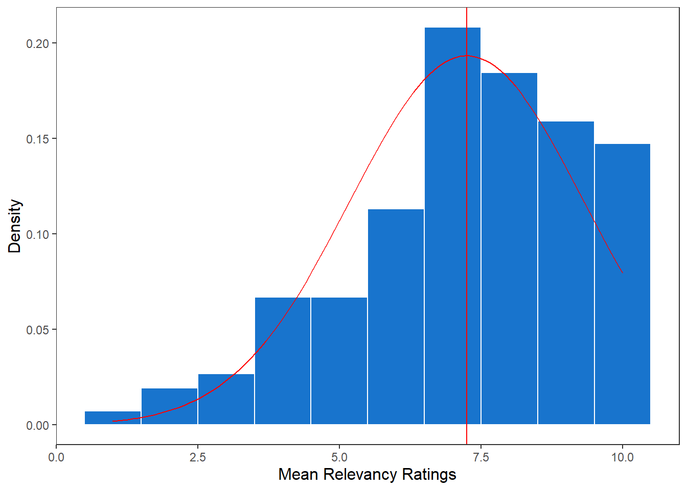
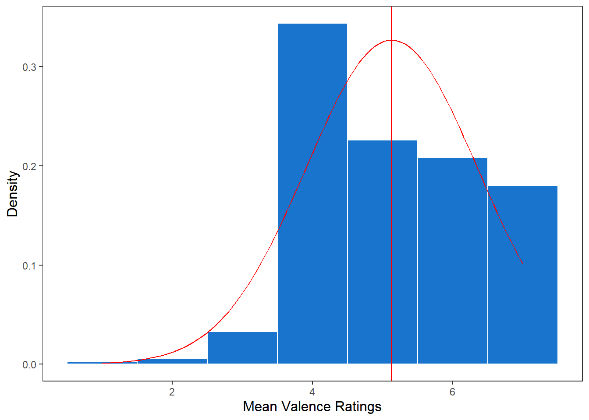

Remark: The study formally was divided in 2 parts, also informing about the risk and benefits of soft robots. This part of the study is not discussed here.
prepare data
set up data.frame
######################################### create counter variable for data set########################################dat$ID <-NAtmp_IDcounter <-0for(i in1:nrow(dat)){if(!is.na(dat$sender[i]) && dat$sender[i] =="Greetings"){# tmp <- dat$prolific_pid[i] tmp_IDcounter = tmp_IDcounter +1 } dat$ID[i] <- tmp_IDcounter}######################################### keep only complete data sets########################################sum(table(dat$ID) !=max(table(dat$ID)))
Remark: two times I surveyed “autonomous” (German: selbstständig, autonom)
######################################### get data set with all ratings########################################dat_ratings <-na.omit(dat[, c("ID", "Attribut", "English_translation", "ratingLivmats", "ratingValence")])dat_ratings$ratingLivmats <-as.numeric(dat_ratings$ratingLivmats)dat_ratings$ratingValence <-as.numeric(dat_ratings$ratingValence)if(nrow(dat_ratings) /32==nrow(questionnaire)){print("Everything worked fine")}
## savexlsx::write.xlsx2(x = summary_ratings, file ="outputs/summary_ratings.xlsx")######################################### get words of basal attributes => 6########################################summary_ratings$English_translation[summary_ratings$mean_ratingLivmats >=6]
# Create the histogram with normal distribution overlayggplot(dat_ratings, aes(x = ratingLivmats)) +geom_histogram(aes(y = ..density..), binwidth =1, fill ="dodgerblue3", color ="white") +stat_function(fun = dnorm, args =list(mean = mu, sd = sigma), color ="red") +labs(x ="Mean Relevancy Ratings", y ="Density") +theme_apa() +theme(plot.title =element_text(hjust =0.5)) +geom_vline(xintercept =mean(dat_ratings$ratingLivmats, na.rm =TRUE), col ="red")

Plot valence ratings:
# Calculate mean and standard deviationmu <-mean(dat_ratings$ratingValence, na.rm =TRUE)sigma <-sd(dat_ratings$ratingValence, na.rm =TRUE)# Create the histogram with normal distribution overlayggplot(dat_ratings, aes(x = ratingValence)) +geom_histogram(aes(y = ..density..), binwidth =1, fill ="dodgerblue3", color ="white") +stat_function(fun = dnorm, args =list(mean = mu, sd = sigma), color ="red") +labs(x ="Mean Valence Ratings", y ="Density") +theme_apa() +theme(plot.title =element_text(hjust =0.5)) +geom_vline(xintercept =mean(dat_ratings$ratingValence, na.rm =TRUE), col ="red")

relation relevancy and valence ratings
both are medium-strongly related
ggplot(dat_ratings, aes(x = ratingLivmats, y = ratingValence)) +geom_point(position =position_jitter(width =0.2, height =0.2)) +geom_smooth(method ="lm", se =TRUE) +labs(x ="Relevancy Ratings", y ="Valence Ratings") + ggplot_theme
Effect sizes were labelled following Funder's (2019) recommendations.
The Pearson's product-moment correlation between
dat_interCorrelation$autonomous1_Rel and dat_interCorrelation$autonomous2_Rel
is positive, statistically significant, and very large (r = 0.86, 95% CI [0.68,
0.94], t(19) = 7.25, p < .001)
# for Valence Ratingggplot(dat_interCorrelation, aes(x = autonomous1_Val, y = autonomous2_Val)) +geom_point(position =position_jitter(width =0.2, height =0.2)) +geom_smooth(method ="lm", se =TRUE) +labs(x ="autonomous valence 1", y ="autonomous valence 2") + ggplot_theme
Effect sizes were labelled following Funder's (2019) recommendations.
The Pearson's product-moment correlation between
dat_interCorrelation$autonomous1_Val and dat_interCorrelation$autonomous2_Val
is positive, statistically significant, and very large (r = 0.86, 95% CI [0.68,
0.94], t(19) = 7.35, p < .001)
missing basal attributes for single research areas
for Research Area A (Energy Autonomy):
table(unlist(dat$toolsStatistics))
adaptivty convert energy Energy storage harvest energy local
1 3 5 7 3
renewable
1
for Research Area B (Adaptivity):
table(unlist(dat$toolsSoftwares))
adaptivty feasability health learning
6 1 1 3
lifetime training trigger responsive
1 2 5
for Research Area D (Societal challenges and Sustainability):
table(unlist(dat$toolsData))
accaptance in society adaptivty agency
5 1 1
change in society critical evaluation individual vs. society
1 1 4
local vs. worldwide politics sustainability
2 3 2